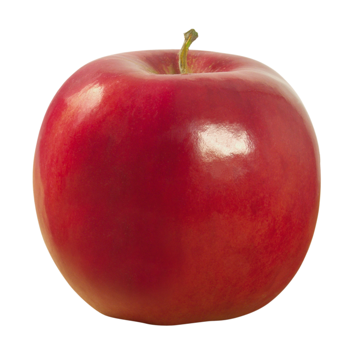

<!DOCTYPE html>
<html lang="en">
<head>
    <meta charset="UTF-8">
    <meta http-equiv="X-UA-Compatible" content="IE=edge">
    <meta name="viewport" content="width=device-width, initial-scale=1.0">
    <title>Document</title>
</head>
<body>
    <script>
        /*
        var fruit;
        fruit=prompt("Ingresar nombre de fruta");
        switch (fruit.toUpperCase()) {
            case "MANZANA": document.write(" Es una fruta pomácea de forma redonda y sabor muy dulce, dependiendo de la variedad.<br>"); break;
            case "PLATANO": document.write("Es una fruta comestible alargada, botánicamente una baya, producida por varios tipos de grandes plantas herbáceas con flores del género Musa.<br>"); break;
            case "FRESA": document.write("Es un fruto de color rojo brillante, suculento y fragante que se obtiene de la planta que recibe su mismo nombre. En Occidente es considerada la 'reina de las frutas'.<br>"); break;
            case "PIÑA": document.write("Es una fruta muy apreciada por su exquisito sabor y delicado aroma, que además sorprende por unas afamadas virtudes terapéuticas, algunas de las cuales están aún por demostrar.<br>"); break;
            default: document.write("NO ESXISTE DESCRIPCIÓN DE LA FRUTA INGRESADA"); break;
        }
        */
        var fruit;
        fruit=prompt("Ingresar nombre de fruta");
        if (fruit.toUpperCase()=="MANZANA") 
        {
            document.write("Es una fruta pomácea de forma redonda y sabor muy dulce, dependiendo de la variedad.<br>");
        } 
        else 
        {
            if (fruit.toUpperCase()=="PLATANO") 
            {
                document.write("Es una fruta comestible alargada, botánicamente una baya, producida por varios tipos de grandes plantas herbáceas con flores del género Musa.<br>");
            } 
            else 
            {
                if (fruit.toUpperCase()=="FRESA")  
                {
                    document.write("Es un fruto de color rojo brillante, suculento y fragante que se obtiene de la planta que recibe su mismo nombre. En Occidente es considerada la 'reina de las frutas'.<br>");
                } 
                else 
                {
                    if (fruit.toUpperCase()=="PIÑA") 
                    {
                        document.write("Es una fruta muy apreciada por su exquisito sabor y delicado aroma, que además sorprende por unas afamadas virtudes terapéuticas, algunas de las cuales están aún por demostrar.<br>");
                    } 
                    else 
                    {
                        document.write("NO ESXISTE DESCRIPCIÓN DE LA FRUTA INGRESADA");
                    }
                }
            }
        }
    </script>
</body>
</html>